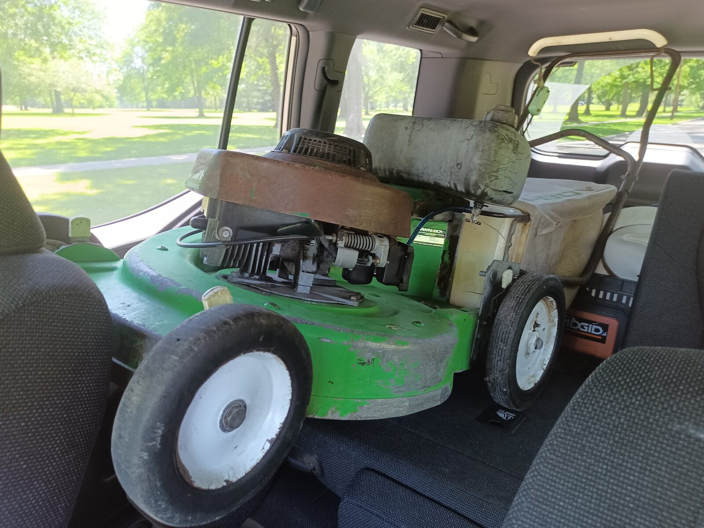
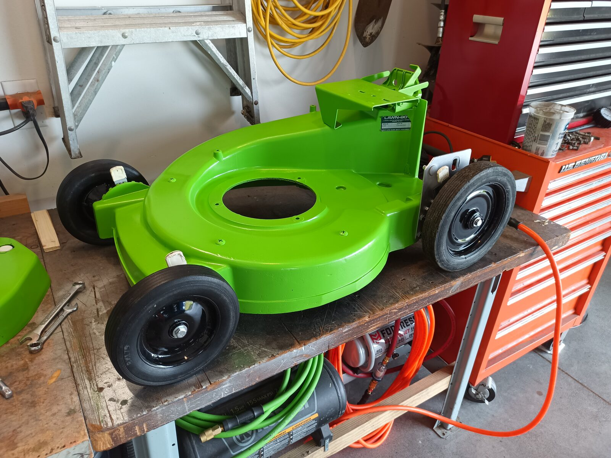
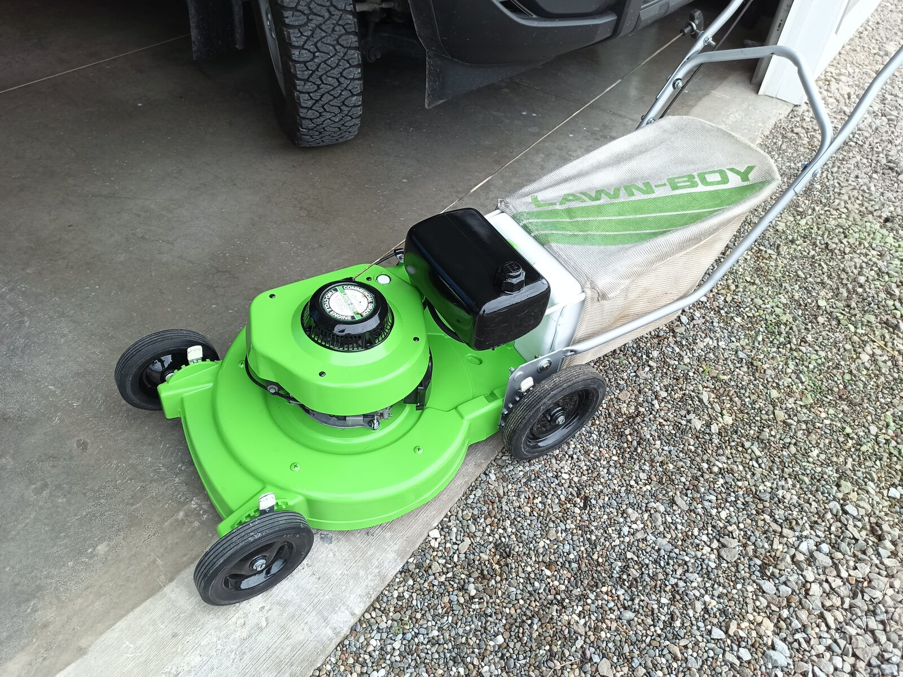

I like to keep busy. Finding an old Lawn Boy push mower on the side of the road on a Saturday isn't something I'll drive right by - that's a project, something that needs doing. Restoring it to new condition is all in a day's work.